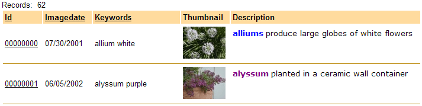
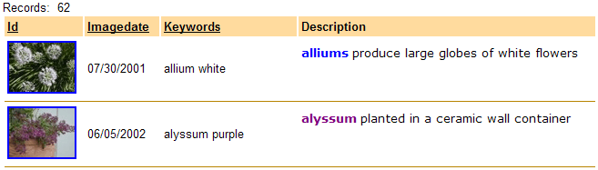

Using Images in Link Fields
Images may be used in hyperlinks and in link fields to detail view forms.

Preview of the grid showing both ID and Thumbnail fields before modification.
For the field that contains the linking data:
In Display Settings > Control type set the control type of the field to "link".
In Link Properties > Display what in link? select "Image in another control".
In Link Properties > Dynamic image control select the name of the image field that you wish to display.
In Link Properties > Link address type select "DetailView link".
For the field that contains the image you wish to display:
In Column Properties > Hide column check the check box.

Preview of the grid after modification showing the Thumbnail image in the ID field.
See Also
Setting Grid Control Properties
Supported By
Alpha Five Version 6 and Above
Limitations
Web publishing applications only.